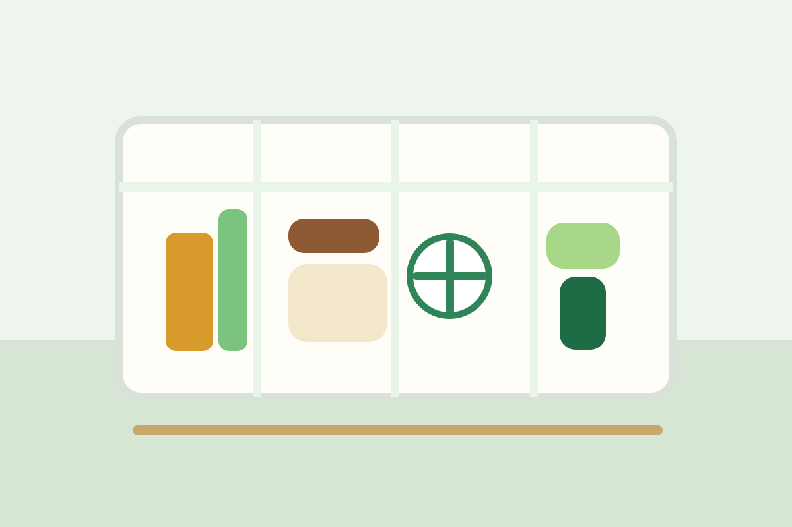
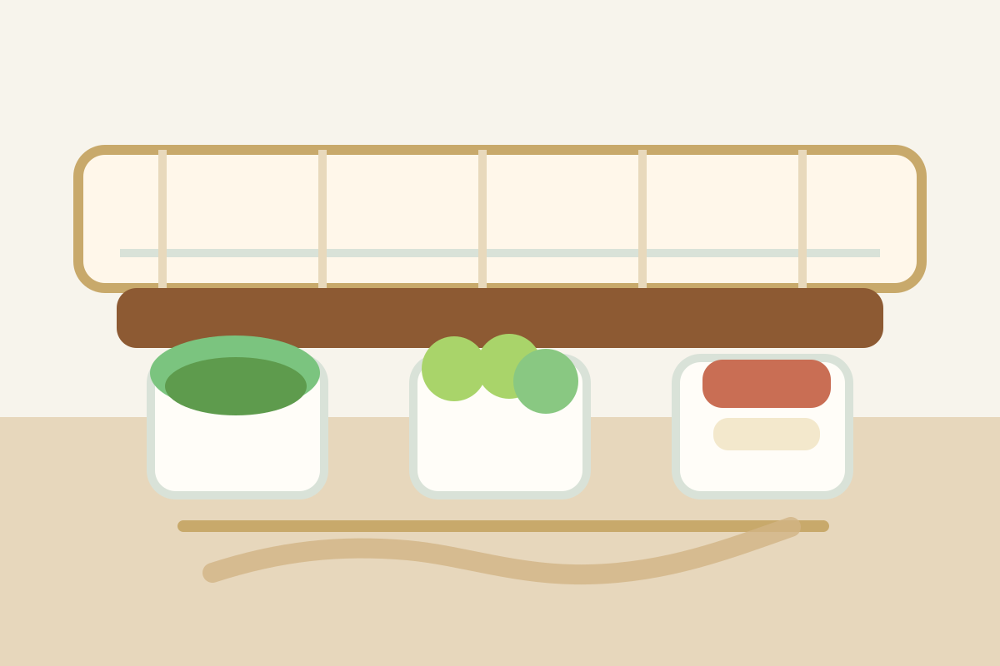

5 dấu hiệu cho thấy rau ăn lá đang phát triển trong điều kiện rất tốt
Từ màu lá, tốc độ lớn đến độ đồng đều của tán cây — những dấu hiệu rất đời thường nhưng giúp người mới nhìn vườn tự tin hơn nhiều.
Chuyện nhà nông giữ phần mềm mại của thương hiệu Ai trồng cây: kể lại chuyện vườn tược, bữa cơm nhà, nhịp chăm cây và những quan sát nhỏ khiến người đọc thấy việc sống xanh gần hơn, thật hơn và dễ bắt đầu hơn.
Đây không phải chuyên mục để đọc cho biết rồi lướt qua. Đây là nơi người xem thấy việc trồng cây có thể dịu dàng, có nhịp riêng và đủ gần với đời sống bận rộn của mình.
Giữ nhịp đọc thong thả, hình ảnh nhẹ mắt và giọng kể đủ gần để người đọc muốn quay lại mỗi tuần.
Từ màu lá, tốc độ lớn đến độ đồng đều của tán cây — những dấu hiệu rất đời thường nhưng giúp người mới nhìn vườn tự tin hơn nhiều.

Một cuốn nhật ký nhỏ hoặc care log điện tử giúp việc chăm vườn bớt rối, bớt quên và cũng giữ lại được rất nhiều niềm vui nhỏ.

Từ nấu ăn tại nhà đến chăm một khu vườn nhỏ, nhiều người đang tìm lại cảm giác bình yên qua những việc nhìn tưởng rất đơn giản.

Chuyện nhà nông nên là nơi khiến người xem thấy dễ chịu, không vội, không nặng nề và có cảm hứng quay lại khi cần tìm một nhịp sống mềm hơn.
Cập nhật xu hướng, thị trường và những câu chuyện mới trong nông nghiệp xanh theo cách ngắn gọn, dễ đọc.
Các bài viết nền tảng giúp người mới vẫn cảm thấy dễ hiểu và đủ tự tin để bắt đầu.
Chia sẻ thực tế về chăm cây, gieo hạt, đọc dấu hiệu của cây và xử lý các tình huống thường gặp.
Góc trò chuyện nhẹ nhàng để học từ kinh nghiệm của những người cùng yêu việc làm vườn.
Người đọc nhớ một bài viết không chỉ vì thông tin đúng, mà vì nó chạm được vào cảm giác sống chậm, chăm chút và tử tế quanh chuyện ăn uống mỗi ngày.